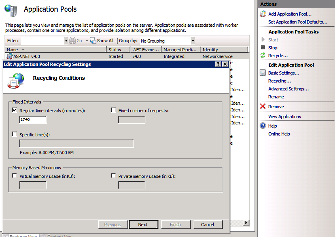

This topic discusses various techniques for tuning a server environment to run Orchard efficiently. The optimal configuration depends on the type of site you're running and on usage patterns, so site administrators should pick from this list what applies best to their particular scenario. As always, improving performance should involve measuring and analyzing performance data so that changes you propose are demonstrably beneficial.
本主题讨论调整服务器环境以有效运行Orchard的各种技术。最佳配置取决于您运行的站点类型和使用模式，因此站点管理员应从此列表中选择最适合其特定方案的内容。与往常一样，提高性能应该包括测量和分析性能数据，以便您提出的改变显然是有益的。
Trust Level
信任等级
Orchard is configured out of the box to run in Full trust.
Orchard配置为开箱即用，以完全信任的方式运行。
Medium trust is no longer supported.
不再支持中等信任。
<trust level="Full" originUrl="" />
Debug/Release
调试/发布
On your production server, there is no reason to run in debug mode. Make sure that the application you deployed was compiled in release mode and that the web.config file in Orchard.Web specifies release mode:
在生产服务器上，没有理由在调试模式下运行。确保您部署的应用程序是在发布模式下编译的，并且_Orchard.Web_中的_web.config_文件指定了发布模式：
<compilation debug="false" targetFramework="4.0"
batch="true" numRecompilesBeforeAppRestart="250">
Shared Versus Dedicated Versus Cloud Hosting
共享与专用对比云托管
Shared Hosting
共享主机
Shared hosting environments usually consist of web farms with load-balancing. The way this is implemented varies greatly between hosting companies and it is usually difficult for customers to get information on the specific configuration being used. How well these configurations perform depends on the load on hosted applications and on the architecture of the application itself.
共享托管环境通常由具有负载平衡的Web场组成。实施方式在托管公司之间差异很大，客户通常很难获得有关所使用的特定配置的信息。这些配置的执行情况取决于托管应用程序的负载以及应用程序本身的体系结构。
Shared hosting is a nice solution for Orchard users on a budget, but there can be tradeoffs. There is a natural contention between the customer who wants his or her site to be immediately available and to run as fast as possible, and the hosting company that wants to support as many sites as possible on a single computer. In order improve site density, hosting companies can be very aggressive about app domain recycling, causing sites to shut down often if they are not accessed frequently or if they consume too much memory.
对于预算有限的Orchard用户来说，共享托管是一个不错的解决方案，但可以进行权衡。希望他或她的网站立即可用并尽可能快地运行的客户与希望在一台计算机上支持尽可能多的站点的托管公司之间存在自然争用。为了提高站点密度，托管公司可以非常积极地进行应用程序域回收，如果不经常访问或者占用过多内存，会导致站点经常关闭。
There are mitigations for these situations, such as using a pinging service or a module that accesses the site on a fixed interval to prevent the app domain from shutting down due to a timeout. A mitigation like this might seem like a good idea, but ultimately it ruins the site density objective and penalizes everyone.
这些情况有缓解措施，例如使用ping服务或以固定间隔访问站点的模块，以防止app域因超时而关闭。像这样的缓解似乎是一个好主意，但最终它会破坏网站密度目标并惩罚每个人。
Another mitigation is to improve the perceived startup time of the application so that a shutdown ceases to be a significant problem. The Orchard.Warmup module (new in Orchard 1.1) is a good way to make the most commonly accessed pages of your site immediately accessible even while the app domain is restarting.
另一个缓解措施是改善应用程序的感知启动时间，以便关闭不再是一个重大问题。 “Orchard.Warmup”模块（Orchard 1.1中的新功能）是一种很好的方法，即使应用程序域重新启动，也可以立即访问您网站上最常访问的页面。
Hosting companies can optimize for Orchard by setting up machine affinity so that a given instance always runs on the same server. This can in turn enable the local file system to be used rather than a network appliance. This can make a real difference, because Orchard can make a heavy use of the file system, such as when performing dynamic compilation or when using SQL Server Compact databases.
托管公司可以通过设置机器亲和性来优化Orchard，以便给定实例始终在同一服务器上运行。这反过来又可以使用本地文件系统而不是网络设备。这可以产生真正的不同，因为Orchard可以大量使用文件系统，例如在执行动态编译或使用SQL Server Compact数据库时。
Dedicated Hosting
专用主机
A dedicated hosting environment is typically more expensive than a shared hosting account, but it might be worth the investment if your business depends on your application responding immediately to any request. A dedicated computer or a dedicated virtual machine offers the advantage of being configurable in exactly the way you want. You get guaranteed processing and bandwidth instead of sharing it with a varying load on other applications running on the same computer, and you get the opportunity to fine-tune all the parameters for the application.
专用托管环境通常比共享托管帐户更昂贵，但如果您的业务依赖于您的应用程序立即响应任何请求，则可能值得投资。专用计算机或专用虚拟机具有可以按照您希望的方式进行配置的优势。您可以获得有保证的处理和带宽，而不是在同一台计算机上运行的其他应用程序上以不同的负载共享它，您将有机会微调应用程序的所有参数。
Cloud Hosting
云托管
Cloud hosting such as Microsoft Azure offers most of the advantages of dedicated hosting plus the ability to scale to increased loads with the flip of a switch. If you are building a business that is expected to grow considerably, this might be the most secure way of ensuring the scalability that you need.
诸如Microsoft Azure之类的云托管提供了专用托管的大部分优势，并且能够通过切换开关来扩展到增加的负载。如果您正在构建一个预计会大幅增长的业务，这可能是确保您所需的可扩展性的最安全方式。
SQL Server Compact Versus SQL Server
SQL Server Compact与SQL Server
An Orchard instance can either run on SQL Server Compact or on full versions of SQL Server or SQL Server Express. SQL Server Compact is an embedded version of SQL Server that has the advantage of being deployable by simply copying its DLLs and database files.
Orchard实例可以在SQL Server Compact上运行，也可以在完整版本的SQL Server或SQL Server Express上运行。 SQL Server Compact是SQL Server的嵌入式版本，其优点是可以通过简单地复制其DLL和数据库文件进行部署。
While SQL Server Compact is extremely lightweight and easy to use and deploy, full versions of SQL Server offer the guaranteed performance that you might need on your site. It might therefore be worth the cost of investing in a hosting solution that gives you access to a full edition of SQL Server.
虽然SQL Server Compact非常轻量级且易于使用和部署，但完整版本的SQL Server可提供您站点上可能需要的保证性能。因此，投资托管解决方案可能需要花费您访问完整版SQL Server的成本。
File System
文件系统
The file system itself can be a drag on application performance. Possible bottlenecks can include a fragmented file system or a congested network connection to a NAS. Checking the speed of the file system and then optimizing it can be a way to get better performance.
文件系统本身可能会拖累应用程序性能。可能的瓶颈可能包括碎片文件系统或与NAS的拥塞网络连接。检查文件系统的速度然后优化它可以获得更好的性能。
Memory
记忆
The more memory is available on a server, the better it will perform. If you can afford it, increasing memory might be among the most efficient ways of improving performance (assuming it's properly configured). Increasing processing power is more expensive and often has a lower return on investment.
服务器上可用的内存越多，它的性能就越好。如果你能负担得起，增加内存可能是提高性能的最有效方法之一（假设它已正确配置）。增加处理能力更昂贵，并且通常具有较低的投资回报。
App Pool Recycling
应用程序池回收
If you have access to IIS settings and if your site has few hits over extended periods of time, consider increasing the default value for app pool recycling. This can be done by going into IIS Manager, going to Application Pools, selecting the app pool for your application, and clicking Recycling:
如果您可以访问IIS设置，并且如果您的站点在较长时间内点击次数较少，请考虑增加应用池回收的默认值。这可以通过进入IIS管理器，转到应用程序池，为您的应用程序选择应用程序池，然后单击回收来完成：

Removing the timeout is generally a good idea if it is replaced by a limit on memory usage; recycling at an arbitrary interval has little benefit, whereas recycling if the application uses all available memory is a good practice.
如果替换为内存使用限制，则删除超时通常是个好主意;以任意间隔进行回收几乎没有什么好处，而如果应用程序使用所有可用内存进行回收是一种很好的做法。
Multi-Tenancy
多租户
Orchard has an optional module called Multi Tenancy that enables more than one site to exist on the same Orchard instance. The data for the sites is separated, and for all practical purposes they are distinct sites. There are a few limitations on what each tenant can do, such as installing new modules and themes.
Orchard有一个名为 Multi Tenancy 的可选模块，它允许在同一个Orchard实例上存在多个站点。站点的数据是分开的，并且出于所有实际目的，它们是不同的站点。每个租户可以做的事情有一些限制，例如安装新模块和主题。
The advantage of a multi-tenant installation over multiple instances of Orchard is that there is only one app domain, which hosting companies favor because it improves site density considerably. It also has advantages for each of the multi-tenant sites, because a hit on any of the tenants keeps the app domain alive. Therefore, even sites that receive very few hits will remain responsive if they share the app domain with enough other sites.
多租户安装在Orchard的多个实例上的优势在于，只有一个应用程序域，托管公司喜欢它，因为它大大提高了站点密度。它对每个多租户站点也有优势，因为任何租户的点击都会使app域保持活跃状态。因此，即使点击次数很少的网站如果与其他网站共享应用域，也会保持响应。
This results in the seemingly paradoxical notion that more sites on a single app domain might perform better in some cases than a single site per app domain. In shared hosting scenarios in particular, this configuration is optimal if it is an option.
这导致了一个看似矛盾的观点，即单个应用域上的更多站点在某些情况下可能比每个应用域的单个站点表现更好。特别是在共享主机方案中，如果这是一个选项，则此配置是最佳的。
Installed Modules
已安装的模块
For both security and performance reasons, it's a good idea to keep the number of modules installed on your production server as low as compatible with your application. There's a cost to anything you add to the system, in particular in terms of dynamic compilation and loading additional assemblies.
出于安全性和性能方面的原因，最好将生产服务器上安装的模块数量保持在与应用程序兼容的最低水平。您添加到系统中的任何内容都会产生成本，特别是在动态编译和加载其他程序集方面。
If you are not using a module, it should be removed. Some modules, such as the gallery, will be useful on your development server but probably not on your production server and should be removed.
如果您不使用模块，则应将其删除。某些模块（如库）在开发服务器上很有用，但可能不在生产服务器上，应该删除。
Going even further, some modules are a convenience that you might want to do without. For example, many modules do nothing more than render a pre-formatted bit of HTML to include some external script or embedded object. If so, it's a good to determine whether you couldn't achieve the same thing with an HTML widget or the body of content items by going into the HTML source and directly injecting HTML there.
更进一步，一些模块是您可能想要的便利。例如，许多模块只是渲染HTML的预格式化位以包含一些外部脚本或嵌入对象。如果是这样，通过进入HTML源并直接在那里注入HTML来确定是否无法通过HTML小部件或内容项主体实现相同的功能。
Depth of the Views Folders
视图文件夹的深度
The contents of Views folders are dynamically compiled and there is some overhead associated with each subfolder. This, combined with the multiplication of modules in a typical Orchard instance, means that it can have an impact on startup performance to flatten Views directories. Orchard gives a choice to module and theme authors to use subfolders or equivalent dotted names for templates (see Accessing and Rendering Shapes). It is generally preferable to use the dotted notation.
_Views_文件夹的内容是动态编译的，每个子文件夹都有一些开销。这与典型Orchard实例中的模块相乘相结合，意味着它可以对启动性能产生影响，从而压缩_Views_目录。 Orchard为模块和主题作者提供了选择，以便为模板使用子文件夹或等效的点名称（请参阅[访问和渲染形状]（访问和渲染形状））。通常优选使用点分表示法。
IPv6, Development Servers, and Modern Browsers
IPv6，开发服务器和现代浏览器
If you are in an IPv6 environment and using a local development server such as the Visual Studio Development Server or IIS Express in WebMatrix, some browsers may have trouble handling more than one request at once. This results in slower performance because resources are fetched one after the other. If you are testing locally and see images appearing one by one, you are probably hitting this bug.
如果您在IPv6环境中并在WebMatrix中使用本地开发服务器（如Visual Studio开发服务器或IIS Express），则某些浏览器可能无法一次处理多个请求。这会导致性能降低，因为资源是一个接一个地获取的。如果您正在本地测试并看到逐个出现的图像，那么您可能会遇到此错误。
An easy workaround is to use 127.0.0.1 instead of localhost as the domain for the development server. Another is to disable IPv6 in the browser, although this change can have side effects. A third workaround is to make sure there's an explicit entry for localhost in your HOSTS file.
一个简单的解决方法是使用127.0.0.1而不是localhost作为开发服务器的域。另一种方法是在浏览器中禁用IPv6，尽管此更改可能会产生副作用。第三种解决方法是确保HOSTS文件中有localhost的显式条目。
Future Perspectives
未来前景
The Orchard team is planning more work for performance in the future. This might include versions of the core assemblies and main dependencies that can be put into the GAC as well as NGen optimizations.
Orchard团队计划在未来为性能做更多的工作。这可能包括核心程序集的版本和可以放入GAC以及NGen优化的主要依赖项。